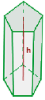

General Area Calculator
Prisma
V = Ab · h -> El volumen es igual al producto del área de la base por la altura.
Un prisma, en geometría, es un poliedro que consta de dos caras iguales y paralelas llamadas bases, y de caras laterales que son paralelogramos.
En el caso en que las caras laterales sean rectangulares, se llama prisma rectangular. El prisma rectangular o cuboide, y el prisma octagonal se encuentran entre los tipos de prisma recto, con una base rectangular y octagonal, respectivamente.